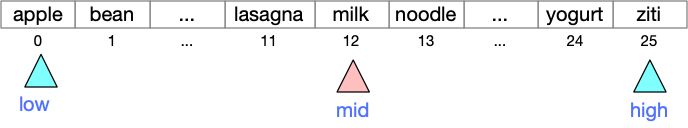

Binary Search
Contents
Binary Search#
Suppose we wish to determine whether schnoggle appears in a list
of 40,000 valid English words. If the list of words is in a
sequential data file as text, it seems the best we can do is linear
time relative to the length of the word list, because at minimum we
must read each entry from the file.
But suppose that instead of checking just ‘schnoggle’, we wish to check thousands of combinations of letters as we search for a legal word in word game like Scrabble or Boggle. It will be worthwhile to read the file just once and store it in a list. If we sort the list (just once!), we can thereafter search for each candidate word very quickly — much more quickly than a linear search.
A running example#
While binary search is important mainly for large lists, we will use a short list of foods to illustrate it.
FOODS = ["apple", "bean", "corn", "date",
"egg", "falafel", "ginger", "hummus", "ice cream",
"jelly", "kale", "lasagna", "milk", "noodle", "olive",
"pizza", "quiche", "ramen", "spinach", "tiramisu",
"udon", "vindaloo", "watermelon", "xôi", "yogurt", "ziti" ]
The list is sorted, which for these words corresponds to alphabetical order. (Alphabetical order and sorted order differ when we mix upper and lower case and characters outside the English alphabet.)
def is_ordered(l: list[str]) -> bool:
"""True if the list is in sorted order"""
prior = l[0]
for word in l[1:]:
if prior < word:
prior = word
else:
return False
# Checked every pair, they were all in order
return True
is_ordered(FOODS)
True
The simplest way to determine whether a string is an element of FOODS is with a linear search:
def linear_search(s, lst: list[str]) -> bool:
"""Returns True iff there is an element of lst equal to s."""
for el in lst:
if s == el:
return True
return False
print(f"Expecting False: {linear_search('kabob', FOODS)}")
print(f"Expecting True: {linear_search('kale', FOODS)}")
Expecting False: False
Expecting True: True
We can do much better.
Divide and conquer#
Suppose we are looking for 'kale' in the ordered list of foods.
Suppose we begin by checking roughly in the middle of the list, at
position 12.

We would find ‘milk’. We would note 'milk' > 'kale',
and since the list is in order, we know that all of the items from
position 12 to the end of the list are also greater than ‘kale’. We
can eliminate all of them, and continue searching only elements 0..11.

Checking again around the middle, we would find ‘falafel’. Since ‘falafel’ < ‘kale’, we can eliminate all the elements from ‘apple’ to ‘falafel’.

Next we probe ‘ice cream’, and since ‘i’ < ‘k’ we eliminate the range from ‘ginger’ through ‘ice cream’.

Probing between ‘jelly’ and ‘lasagna’, we finally find ‘kale’.
Had we been searching instead for ‘kabobs’, we would have eliminated ‘kale’ and ‘lasagna’ and checked ‘jelly’.

Since ‘jelly’ < ‘kabobs’, we would conclude that ‘kabobs’ must appear after ‘jelly’, i.e., in the range of positions from 10 to 9. That is an empty range, so we would conclude there are no kabobs in our list of foods.

That is the tactic that binary search uses. Initially we search the whole list, but at each step we either find the value we are searching for, or we eliminate half of the remaining range. If the whole range is eliminated (e.g., a range from 10..9), then we conclude that value is not in the list.
def binary_search(s, lst: list[str]) -> bool:
"""Returns True iff there is an element of lst equal to s,
provided lst is ordered.
"""
# Initially we search the whole list
low = 0
high = len(lst) - 1
while low <= high:
print(f"Searching in range {low}..{high}")
mid = (low + high) // 2
probe = lst[mid]
print(f"Probing '{probe}' at position {mid}")
if s == probe:
return True
if probe < s:
# Eliminate lower half of range
low = mid + 1
else:
# Eliminate higher half of range
high = mid - 1
# When low > high, we have eliminated the whole range
return False
print("Checking for kale")
print(f"Expecting True: {binary_search('kale', FOODS)}")
print("\n\nChecking for kabobs")
print(f"Expecting False: {binary_search('kabobs', FOODS)}")
print("\n\nChecking for almond")
print(f"Expecting False: {binary_search('almond', FOODS)}")
Checking for kale
Searching in range 0..25
Probing 'milk' at position 12
Searching in range 0..11
Probing 'falafel' at position 5
Searching in range 6..11
Probing 'ice cream' at position 8
Searching in range 9..11
Probing 'kale' at position 10
Expecting True: True
Checking for kabobs
Searching in range 0..25
Probing 'milk' at position 12
Searching in range 0..11
Probing 'falafel' at position 5
Searching in range 6..11
Probing 'ice cream' at position 8
Searching in range 9..11
Probing 'kale' at position 10
Searching in range 9..9
Probing 'jelly' at position 9
Expecting False: False
Checking for almond
Searching in range 0..25
Probing 'milk' at position 12
Searching in range 0..11
Probing 'falafel' at position 5
Searching in range 0..4
Probing 'corn' at position 2
Searching in range 0..1
Probing 'apple' at position 0
Expecting False: False
How fast is it?#
Since binary search eliminates half of the search range on each
iteration of the loop, the total time it requires for a search of
\(n\) items is proportional to \(\lg n\), the logarithm base 2 of \(n\).
Here are some example values of \(\lg n\):
\(n\) |
\(\lg n\) |
|---|---|
256 |
8 |
1024 |
10 |
4096 |
12 |
16,777,216 |
20 |
4,294,967,296 |
32 |
18,446,744,073,709,551,616 |
64 |
The attraction of binary search over linear search for very large lists should be apparent.
The main limitation of binary search is that the list must already be ordered (sorted). If you are going to search a list just once, it does not make sense to sort it (which takes somewhat longer than a linear search) just to prepare it for a binary search. It can make sense if you can sort the data once in preparation for searching it many times.
Variations#
Binary search is a fundamental technique that appears in many applications, with several variations. We might search a list of (key, value) pairs to find keys, returning values, or keys and values might be stored in parallel arrays.
If you continue with computer science courses through intermediate data structures (e.g., CS 313 at U. Oregon), you will learn to construct self-balancing binary search trees, which are closely related to binary search. Database systems, which are ubiquitous in data processing, also use self-balancing trees.
In our Boggle project, we use a variation that can return a third value, in addition to “found” or “not found”.